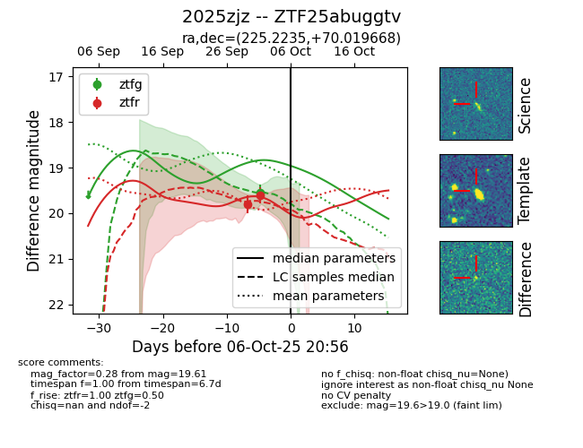
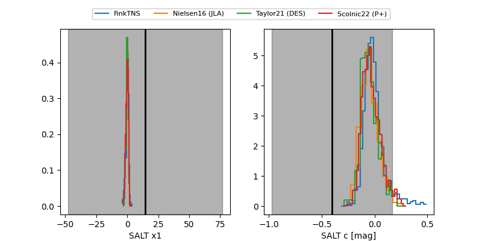

FINK: ZTF25abuggtv
Lasair: ZTF25abuggtv
ALeRCE: ZTF25abuggtv
TNS: 2025zjz
YSE: 2025zjz
ZTF25abuggtv (ztf,fink)
2025zjz (tns,yse)
equatorial (ra, dec) = (225.2235,+70.01967)
galactic (l, b) = (108.3838,+43.26757)


last ztfg=19.56, ztfr=19.61
1 ztfg, 2 ztfr detections